กิจกรรมที่น่าสนใจ
ถ่ายรูปให้อาหาร แพะ ที่ จับแพะชนแกะ
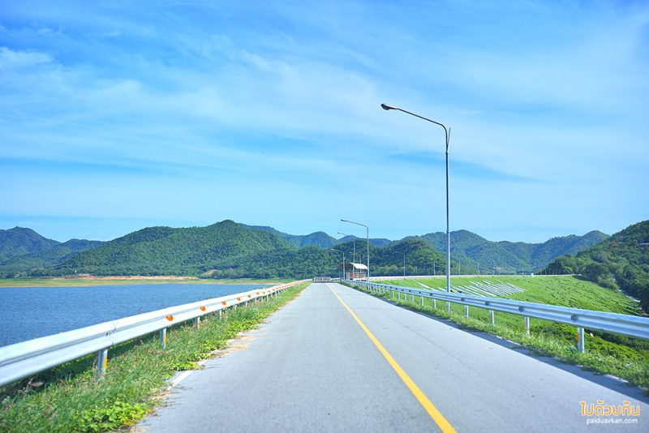
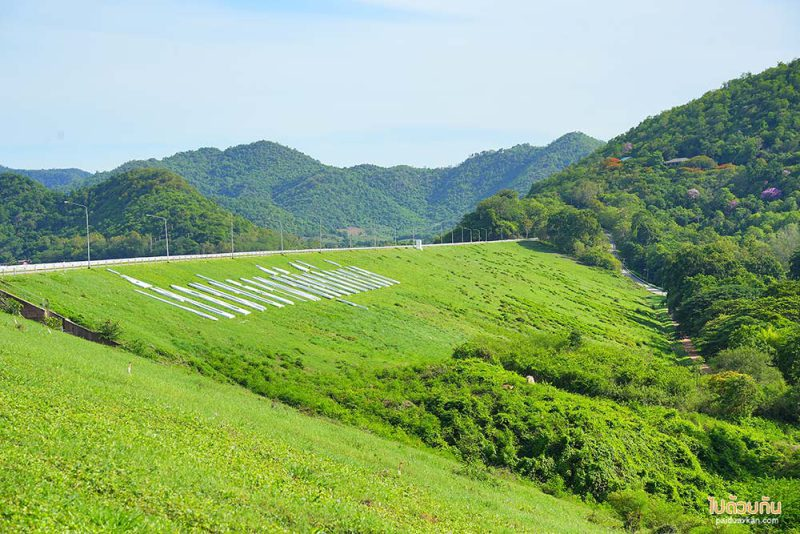
จุดแรกที่จะถึงก่อน คือ สันเขื่อนปราณบุรี มีถนนเลียบเขื่อนทอดยาว สามารถขับรถเข้าไปจอดบนบริเวณสันเขื่อน
เพื่อชมทัศนียภาพที่สวยงามของผืนน้ำที่ถูกโอบล้อมด้วยภูเขา ช่วงเวลาที่แนะนำ คือ ช่วงเช้าหรือในช่วงเย็น
เพราะแดดจะไม่ร้อนมาก แต่ถ้าใครมีจุดหมายเพื่อมาถ่ายรูปแพะแกะ
ก็แวะมาเที่ยวที่นี่ก่อนหรือขากลับได้ช่วงน้ำลดมองเห็นเกาะแก่งที่อยู่ในเขื่อนได้แบบชัดเจน
ทิวทัศน์โดยรอบเขียวขจีไปด้วยต้นไม้ เห็นวิวรอบทิศแบบ 360 องศา มองแล้วสบายตา อากาศบริสุทธิ์สดชื่น
ลมพัดเย็นสบาย
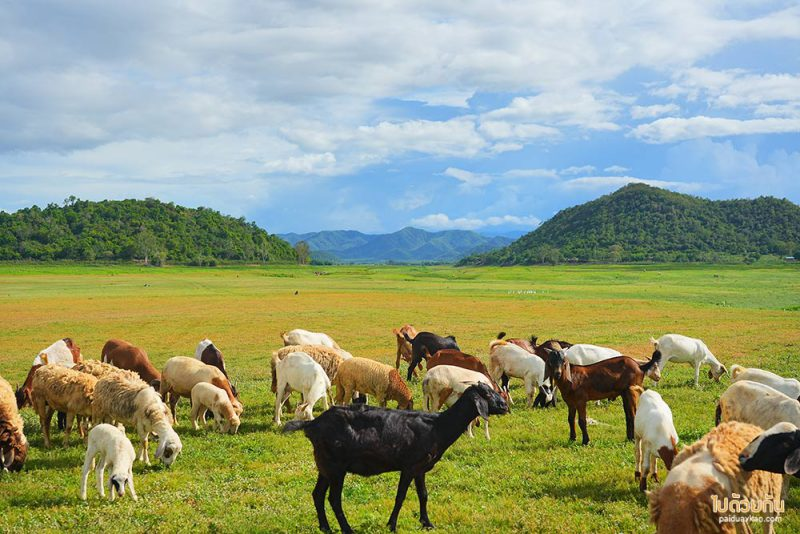
สำหรับการมาถ่ายรูปน้องแพะที่ จับแพะชนแกะ แนะนำให้ปักหมุดมาที่ โรงเรียนบ้านเนินพะยอม
ไม่ต้องปักหมุดมาที่เขื่อนปราณบุรี
เพราะอยู่คนละฝั่งกัน ช่วงเวลาที่เหมาะสม คือ ช่วงบ่ายสามเป็นต้นไป อากาศไม่ร้อนมาก
และแสงตอนเย็นค่อนข้างสวย
แต่ถ้าใครไม่สะดวกมาช่วงเย็น ก็มาช่วงเวลาอื่นได้เลย แต่ควรมาก่อน 6 โมง เย็น
เพราะเจ้าของฟาร์มจะต้อนแพะเข้าคอก ช่วงห้าโมง และอีกอย่างถ้ากลับเย็นมาก เส้นทางไม่ดี ถ้ามืด จะขับรถลำบาก
เพราะที่นี่ไม่มีไฟฟ้า ส่วนเดือนที่น้ำในเขื่อนลดจนเห็นพื้นหญ้า เริ่มตั้งแต่ช่วงเดือน มิถุนายน เป็นต้นไป
แต่น้ำจะลงถึงเดือนไหน เพื่อความชัวร์ ก่อนเดินทางโทรสอบถามไปที่เบอร์ของ จับแพะ ชนแกะ
ได้สำหรับค่าใช้จ่ายในการเข้ามาถ่ายรูป ไม่เสียเงิน แล้วแต่จะให้เป็นค่าอาหารของน้อง
ข้อมูลเพิ่มเติม
ขี่ม้าที่ชายหาดหัวหิน
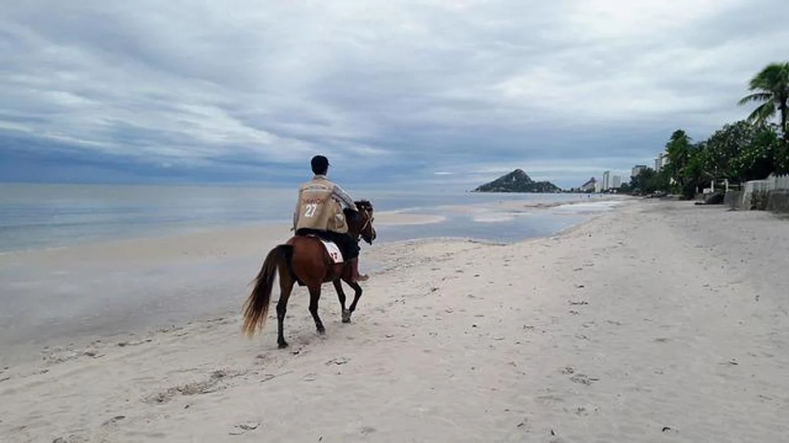
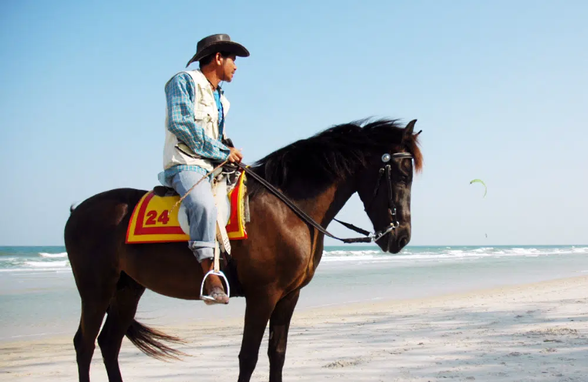
กิจกรรม ขี่ม้าหัวหิน ซึ่งเป็นกิจการสุดยอดฮิตของชายหาดหัวหิน จะมีการขี่ม้าเดินเลียบชายหาด แบบชิลล์ ๆ
ชมบรรยากาศวิวทะเล ดูผู้คน เรียกได้ว่าเป็นกิจกรรมเท่ ๆ
หากได้มีโอกาสมาก็จะต้องลองกิจกรรมขี่ม้าเอกลักษณ์ของชายหาดหัวหินสักครั้ง
กิจกรรมขี่ม้าที่ชายหาดหัวหิน ปัจจุบันเหลือมาแค่เพียงไม่กี่ตัว จากสมัยก่อนที่มีม้าเป็นร้อย
ซึ่งพันธุ์ของม้าที่ได้มีการนำมาให้บริการนักท่องเที่ยวก็จะมีด้วยกัน 2 สายพันธุ์ ก็คือ ม้าแคระ
กับม้าเทศพันธุ์ผสมไซส์กลาง ซึ่งนักท่องเที่ยวหมดห่วงเรื่องความปลอดภัยไปได้เลย
ซึ่งตลอดกิจกรรมการขี่ม้าจะมีเจ้าหน้าที่คอยดูแลอยู่ตลอดและที่สำคัญมาที่ได้มีการนำเอามาให้บริการล้วนเป็นม้าแข่งที่ได้มีการคัดออกจากสนาม
ซึ่งจะเป็นไม้ที่มีนิสัยไม่ดื้อ ไม่พยศ เพราะแต่ละตัวล้วนถูกฝึกมาแล้วทั้งนั้น
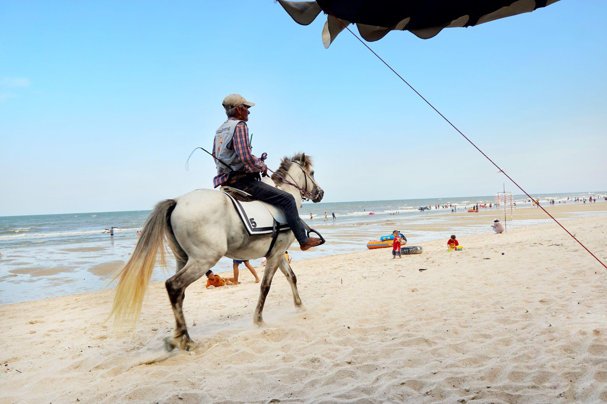
อัตราบริการกิจกรรมขี่ม้า 20 นาที ราคา 400 บาท, 30 นาที 500 บาท และ 1 ชั่วโมง 1000 บาท
หรือหากต้องการนั่งบนหลังม้าเพื่อถ่ายรูปเฉย ๆ คนละ 50 บาท (ปัจจุบันอาจมีการเปลี่ยนแปลง)
เดิน ช็อป กิน ที่ถนนคนเดินประจวบ
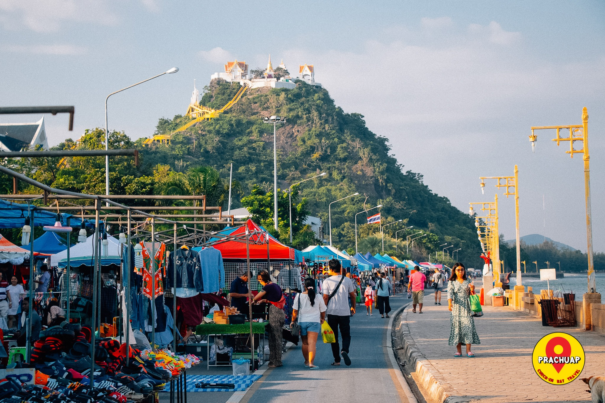
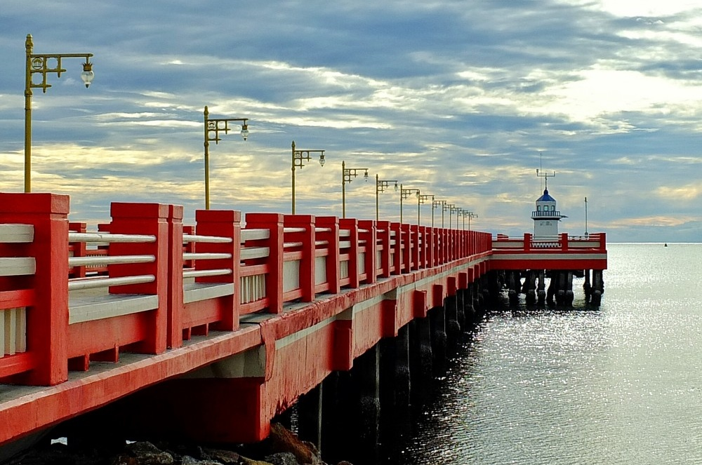
ถนนคนเดินประจวบคีรีขันธ์แห่งนี้ เป็นถนนคนเดินเลียบชายทะเล ตั้งอยู่ตำบลอ่าวน้อย
อำเภอเมืองจังหวัดประจวบคีรีขันธ์ ลองได้มีโอกาสแวะมาเป็นต้องตื่นเต้นไปกับร้านรวงที่มีอยู่ละลานตา
ตั้งแต่บริเวณสะพานสราญวิถี เรื่อยไปจนเกือบถึงเขาช่องกระจก
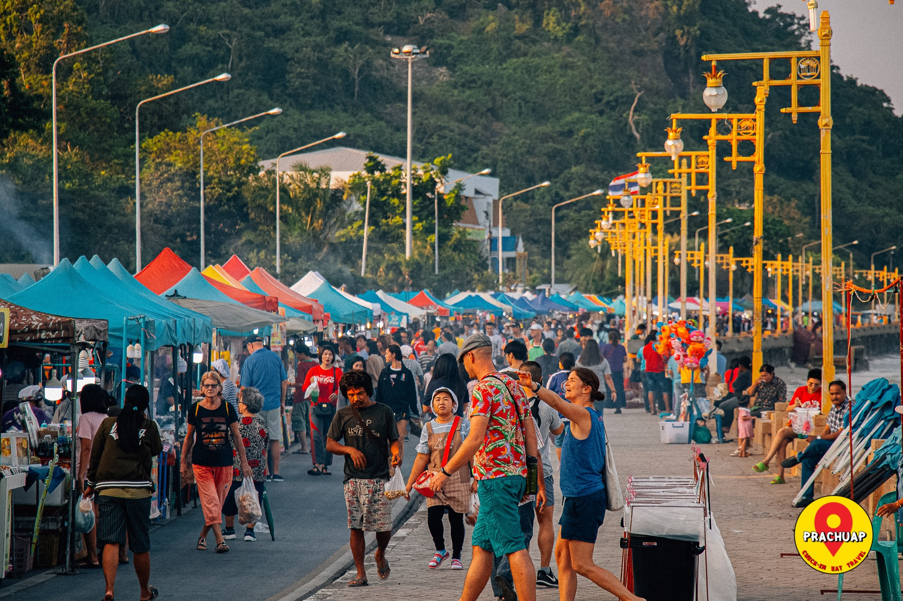
กิจกรรมส่วนใหญ่เห็นทีจะเป็นการซื้อของกิน มีตั้งแต่ของกินเล่น เช่น หมูย่าง, ลูกชิ้นย่าง, ข้าวยำแหนมสด
และห่อหมกย่าง เป็นต้น ข้าวราดแกงก็มี อาหารตามสั่งก็ได้
หรือใครเป็นสายแซ่บก็มีให้เช่นกันอย่างส้มยำและเมนูยำต่าง ๆ เมื่อมีของคาวแล้วก็ต้องมีของหวานตบท้าย
ทั้งน้ำปั่น น้ำหวาน มดจากของกิน ที่นี่ก็มีสินค้าให้เลือกซื้อเลือกหา โดยเฉพาะอย่างยิ่งสารพัดของฝาก
ทั้งเสื้อ กางเกง เคสโทรศัพท์มือถือลายน่ารัก และของใช้ต่าง ๆ ให้นักท่องเที่ยวได้หยิบจับหยิบลอง
ถูกใจชิ้นไหนก็ซื้อหาตามสบาย
ข้อมูลเพิ่มเติม
ถ่ายรูปสวยๆในที่ลับ ที่ป่าสนเหมืองแร่
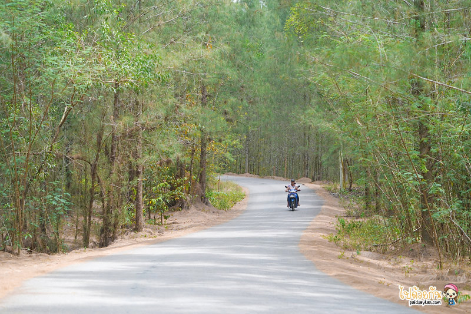
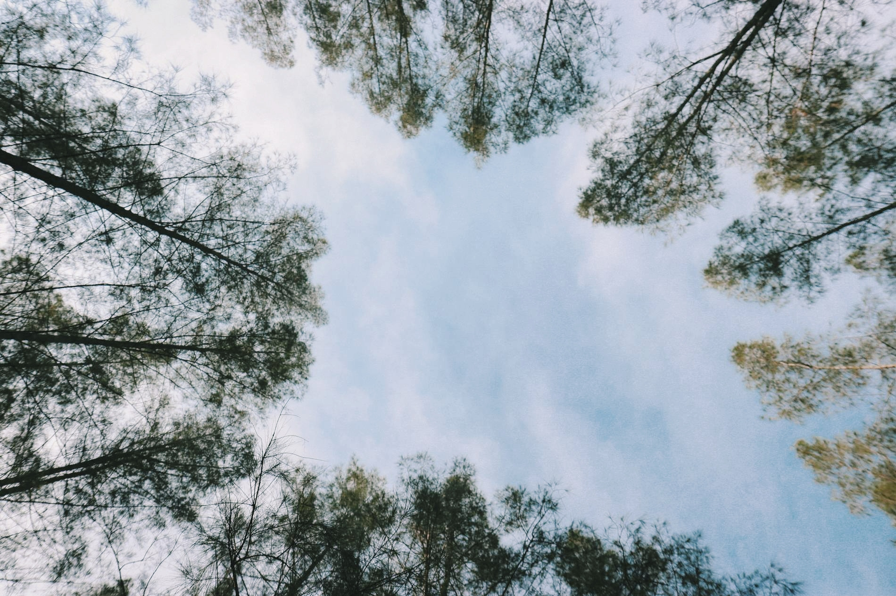
ป่าสนบ้านเหมืองแร่ ตั้งอยู่ในอำเภอทับสะแก ห่างจากอำเภอหัวหินมาประมาณ 2 ชั่วโมง
เป็นถนนสายป่าสนที่มีต้นสนขึ้นเรียงรายเป็นทิวแถวตลอดสองฝั่งในระยะประมาณ 1 กิโลเมตร
หากใครชอบบรรยากาศแบบธรรมชาติ ฟังเสียงนกร้องขับกล่อม
ถ่ายรูปออกมาได้ฟีลชวนฝันเหมือนเดินอยู่บนถนนสายป่าสนของเมืองนอก ต้องถูกใจกับสถานที่แห่งนี้แน่นอน
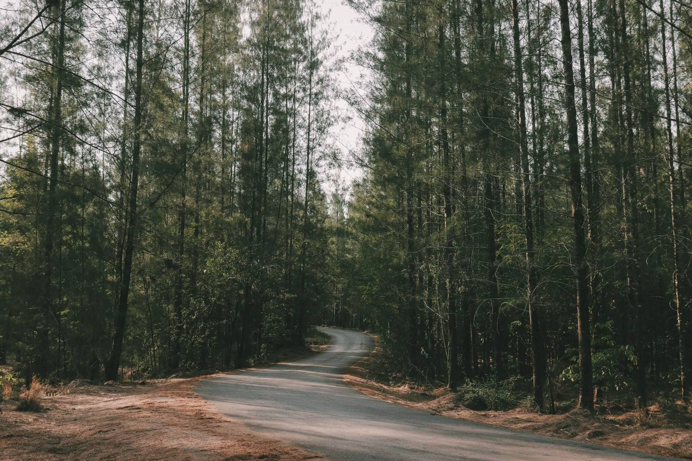
ตลอดสองข้างทางถนนร่มรื่นไปด้วยทิวต้นสนสูง บางช่วงเป็นถนนเส้นตรง และบางช่วงถนนโค้ง
กลายเป็นภาพที่มองดูสวยงามแปลกตาถ่ายรูปสวยทุกจุด จะมาในลุคแคมปปิ้ง ซาฟารี หรือแต่งชุดกระโปรง
กรุยกรายสะบัดไปมาให้สุดปังก็ได้หมด ยิ่งในช่วงที่มีแสงแดดส่องลอดผ่านทิวสนลงมายิ่งเพิ่มบรรยากาศให้ชวนมอง
ได้ฟีลแสงเงาสวยๆ จะมาเที่ยวช่วงเวลาไหนได้ทั้งหมด ตอนยืนถ่ายรูปกลางถนนให้ระมัดระวังรถนิดนึง
เพราะถนนเป็นเส้นทางสัญจรของชาวบ้าน มีทั้งรถใหญ่และรถเล็กวิ่งผ่านตลอด
ข้อมูลเพิ่มเติม